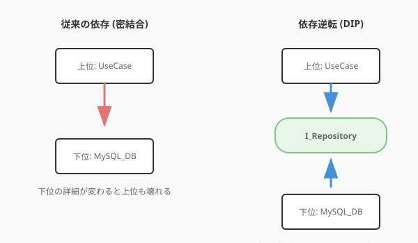

あなたは、これまでにコードを書いていて「一箇所を直しただけなのに、思わぬところが壊れてしまった」という経験はありませんか？あるいは、「機能を追加したいだけなのに、関係ないファイルまで大量に書き換えなければならなかった」ことは？
それは、魔法陣（設計）の「構造」が少しだけ複雑に絡み合ってしまっているサインかもしれません。
美しいソフトウェアには、共通する「黄金律」があります。それは、整理整頓が行き届いたアトリエのように、どこに何があるかが明確で、一つひとつの道具（クラス）が自分の役割に誇りを持っている状態です。
このセクションでは、変化に強く、拡張するのがワクワクするような美しい構造を生み出すための5つの原則——SOLID原則について学びます。
ソフトウェアは、一度作って終わりではありません。使われ続ける限り、新しい魔法（機能）が追加され、既存の術式（ロジック）が磨かれ、変化し続けます。
SOLID原則は、その変化を「苦労」ではなく「楽しみ」に変えるための知恵です。この原則に従うことで、コードは「高凝集・疎結合」な状態になります。
[図: 高凝集・疎結合のイメージ比較]
高凝集（High Cohesion）：専門家の誇り クラスの中に、強く関連する要素だけが集まっている状態です。「私はこの仕事のプロフェッショナルだ」と胸を張れる状態とも言えます。凝集度が高いと、修正箇所が散らばらず、コードを読むのも直すのも楽になります。
疎結合（Low Coupling）：自立した関係 クラス同士の依存が最小限である状態です。「相手の秘密（内部実装）を知らなくても、インターフェース（契約）さえ守れば協力できる」という、大人の関係です。結合度が低いと、一つの変更が他の場所に波及する「予期せぬ破壊」を防げます。
SOLID原則は、この「高凝集・疎結合」を実現するための具体的なガイドラインなのです。

| 頭文字 | 原則名 | ひとことで言うと | 冒険パーティでのたとえ |
|---|---|---|---|
| S | 単一責任の原則 (SRP) |
一つのクラスは、一つの役割だけを持つ | 「魔法使いは剣を振るうな」 回復役が前衛に出るとパーティが崩壊する。役割に集中せよ。 |
| O | 開放閉鎖の原則 (OCP) |
修正には閉じ、拡張には開いている | 「装備は変えられても、技は変えるな」 新しい武器（拡張）は装備できるが、剣術の型（既存コード）は崩さない。 |
| L | リスコフの置換原則 (LSP) |
子は親の代わりを完璧に務められる | 「伝説の剣は、ただの剣としても使える」 上位職は下位職の仕事を完全にこなせなければならない。 |
| I | インターフェース分離の原則 (ISP) |
必要な機能だけが入った道具箱を渡す | 「盗賊に重装備を渡すな」 使わないスキルや道具を押し付けられると、動きが鈍くなる。 |
| D | 依存性逆転の原則 (DIP) |
具体的な実装ではなく、抽象的概念に頼る | 「特定の剣ではなく、『剣技』に頼れ」 「聖剣」がないと戦えない勇者より、どんな剣でも戦える達人になれ。 |
QuestForgeの初期のコードを題材に、これらの原則を適用して、より効果的な設計へと進化させてみましょう。
初期の状態:
Quest クラスが、自分のデータ管理だけでなく、「経験値ボーナスの計算ロジック」や「作業時間の推定」まで抱え込んでいます。
class Quest:
def complete(self):
# 完了処理...
bonus = self._calculate_bonus() # ボーナス計算も自分でやる
return self.base_xp + bonus
def _calculate_bonus(self):
# 複雑なボーナス計算ロジック...
pass
さらに効果的な方法:
ボーナス計算の知恵を ExpCalculator という専門のクラス（賢者）に任せます。これにより、計算ルールが変わっても Quest クラスを書き換える必要がなくなります。
class ExpCalculator:
"""経験値計算の専門家"""
def calculate(self, quest: Quest) -> int:
# 専門的な計算ロジック
return quest.base_xp + bonus_logic
初期の状態:
新しいカテゴリのクエスト（例：期間限定のイベントクエスト）を追加するたびに、既存の報酬計算処理の if 文を書き換えています。
さらに効果的な方法: 「報酬計算」というインターフェース（共通の型）を作り、カテゴリごとに新しいクラスを作成します。既存のコードを一切汚さずに、新しい種類のクエストを無限に追加できるようになります。
SOLID原則は非常に強力ですが、常に完璧に守り続けるのは根気のいる作業です。ここで、AIを「設計の守護者」として活用しましょう。
AIに自分のコードを渡し、「このクラスに複数の責務が混ざっていないか？」と問いかけてみてください。AIは「このロジックは別のクラスに分けたほうが、将来の拡張性が高まりますよ」といった、冷静で的確なアドバイスをくれます。
「この if-else の塊に開放閉鎖の原則（OCP）を適用して、ストラテジーパターンで書き換えて」と詠唱するだけで、AIは一瞬にしてエレガントなクラス構造を提案してくれます。
原則を厳格に守りすぎると、コードが細分化されすぎて複雑になることもあります。AIと「この規模のアプリで、どこまで抽象化すべきか？」をディスカッションすることで、現在のプロジェクトにとって最適なバランスを見つけ出すことができます。
実際に、多すぎる役割を抱えたクラスを整理（リファクタリング）してみましょう。
以下の Quest クラスを見てください。データの管理だけでなく、複雑な「作業時間の推定」ロジックまで自分で抱え込んでしまっています。
from datetime import timedelta
class Quest:
def __init__(self, title, difficulty):
self.title = title
self.difficulty = difficulty # "EASY", "HARD" など
def estimate_work_time(self):
# 難易度に応じて時間を推定するロジック（本来は別の専門家の仕事）
if self.difficulty == "EASY":
return timedelta(minutes=30)
elif self.difficulty == "HARD":
return timedelta(hours=4)
return timedelta(hours=1)推定ロジックを EffortEstimator（見積もりの賢者）という新しいクラスに切り出します。
class EffortEstimator:
"""作業時間推定の専門家"""
def estimate(self, difficulty):
if difficulty == "EASY":
return timedelta(minutes=30)
elif difficulty == "HARD":
return timedelta(hours=4)
return timedelta(hours=1)最後に、Quest クラス自身がロジックを持つのではなく、専門家に「依頼（委譲）」するように書き換えます。
class Quest:
def __init__(self, title, difficulty, estimator: EffortEstimator):
self.title = title
self.difficulty = difficulty
self._estimator = estimator # 専門家を雇う
def get_estimated_time(self):
# 自分では計算せず、専門家に聞く
return self._estimator.estimate(self.difficulty)これで、Quest クラスは「自分のデータを知っている」という本来の役割に集中できるようになりました。これが単一責任の原則（SRP）の第一歩です。
次は、これらの原則をより具体的に実現するための、先人たちの知恵の結晶——「デザインパターン（賢者たちの処方箋）」の世界へ進みましょう。
このセクションで学んだことを実践するためのプロンプト：
以下のPythonクラスについて、SOLID原則（特に単一責任の原則）の観点からレビューし、改善案を提示してください。
[対象のコードを貼り付け]この `if-elif-else` で分岐している処理を、開放閉鎖の原則（OCP）に従って、新しいクラスを追加するだけで拡張できるようにリファクタリングしてください。執筆メモ: